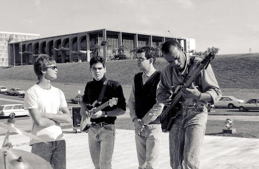

|
|  |
LEGIÃO URBANAA Legião Urbana é uma das bandas mais icônicas do rock brasileiro, formada em Brasília em 1982. A história da banda começou com o fim do Aborto Elétrico, grupo punk que contava com Renato Russo e Fê Lemos. Após desentendimentos, Renato Russo decidiu seguir um novo caminho e, junto com Marcelo Bonfá, Eduardo Paraná e Paulo Guimarães, formou a Legião Urbana.A banda rapidamente se destacou na cena musical brasileira, com letras profundas e poéticas, muitas vezes abordando temas sociais e políticos. O primeiro álbum, lançado em 1985, trouxe sucessos como “Será” e “Ainda é Cedo”, consolidando a Legião Urbana como uma das principais vozes de sua geração. |
A Legião Urbana surgiu em um momento de efervescência cultural e política no Brasil, durante os anos finais da ditadura militar. Brasília, a capital do país, era um centro de jovens inquietos e criativos, e foi nesse ambiente que a banda se formou. Renato Russo, com sua habilidade única para compor letras que refletiam as angústias e esperanças de uma geração, rapidamente se tornou a voz de muitos jovens brasileiros.
Após o lançamento do primeiro álbum em 1985, a Legião Urbana não parou de crescer. O segundo álbum, “Dois” (1986), trouxe clássicos como “Eduardo e Mônica” e “Índios”, consolidando ainda mais o sucesso da banda. Em 1987, o álbum “Que País É Este” trouxe uma crítica social afiada, com a faixa-título se tornando um hino de protesto.
A banda continuou a lançar álbuns de sucesso ao longo dos anos 80 e 90, incluindo “As Quatro Estações” (1989), que é considerado por muitos como o auge criativo da Legião Urbana. Este álbum trouxe sucessos como “Pais e Filhos” e “Há Tempos”, que continuam a ser tocados e apreciados até hoje.
Infelizmente, a trajetória da banda foi interrompida pela morte prematura de Renato Russo em 1996. No entanto, o legado da Legião Urbana permanece vivo, com suas músicas ainda ressoando profundamente com novas gerações de fãs. A banda é frequentemente lembrada por suas letras poéticas e engajadas, que abordam temas universais como amor, política, e a busca por sentido na vida. |
|
|